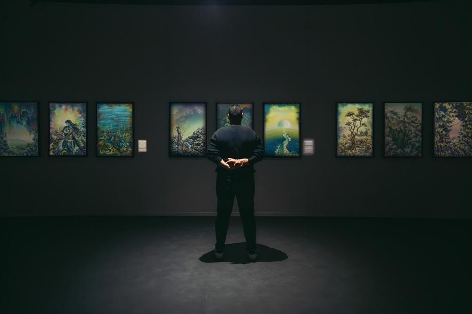
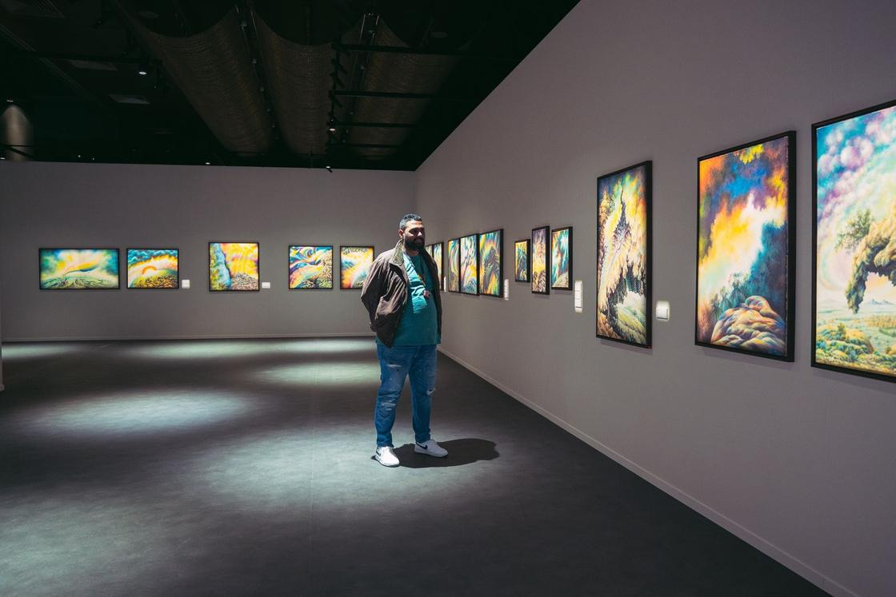

01EXHIBITION LIGHTINGCREATIVE DESIGN & EXECUTION MANAGER
Kareem
Khaled Eid
LIGHTING & SCENOGRAPHY DESIGNER
EXHIBITIONS · THEATRE · SCENOGRAPHY · LIGHTING
I design lighting and scenography for theatre, art exhibitions and live events, combining visual storytelling with practical execution. My work in theatre began in 2000.

EXHIBITION LIGHTING · SAAD AL-UBAIDSELECTED WORKTHE PRACTICE
Design is where
space becomes narrative.
My work connects visual thinking with execution — from the stage and costume to lighting systems, exhibitions and live events.
SELECTED WORK
Selected work
Explore exhibition lighting, theatre and scenography, with an overview of my role in each area.
HOW I CAN HELP
Services
Design and practical delivery for exhibitions, theatre and live events. The scope is agreed around your production.
Exhibition lighting
Lighting design for paintings, art displays and exhibition spaces.
Theatre lighting
Lighting design and implementation for stage productions.
Scenography
Set, costume, props and lighting design as a connected visual approach.
Event delivery
Event equipment management and support for visual production.
WORK IN DETAIL
Portfolio
A closer look at the work, grouped by discipline. Select an image to view it in full.
01 · Decor Implementation
My role: decor implementation for university theatre, 2000–2005.
{kind=link}
02 · Set Design for Theatre
My role: set design for theatre productions with independent companies.
{kind=link}
{kind=link}
{kind=link}
03 · Lighting Design & Implementation
My role: lighting design and implementation. Selected productions include Al-Kambousha, Paravan and Circus of the Beast.
{kind=link}
{kind=link}
{kind=link}
{kind=link}
{kind=link}
{kind=link}
{kind=link}
04 · Scenography Design
My role: scenography, bringing together set, costume and lighting design.
{kind=link}
{kind=link}
{kind=link}
05 · Event Preparation
My role: event equipment management. Projects include Dream Project, Dream Project 2 and the opening event for Grandfather’s Will.
{kind=link}
{kind=link}
{kind=link}
06 · Short Film Lighting
My role: lighting for short films. Credits include Khalawis, Shams, Sand and Ghaber, and Listen to Us.
{kind=link}
{kind=link}
{kind=link}
07 · Art Exhibition Lighting
My role: art exhibition lighting for the Biography and Career Exhibition of Saad Al-Ubaid.
{kind=link}
{kind=link}
{kind=link}
CAREER ARCHIVE
Experience
Theatre, screen and event credits, with collaborators and responsibilities.
012000 — 2005Decor Implementation
The Whirlwind — Bassam Abdullah
The Devil — Mustafa Hosni Al-Kutbi
The Game — Mohamed Gabr
Scott — Mohamed Hatem / Amr Abed
An Egyptian Tale — Basil Mamdouh
The King Is the King — Ahmed Esmat
The Night Song — Tamer Karam
Tomorrow — Ramez Sami
Khayal Mata — Mahmoud Abdel Aziz
The River of Madness — Moatasem Shaaban
Al-Helwaniya — Haitham Abdel Aziz
State of Emergency — Mahmoud Abdel Aziz
02—Set Design for Theatre
Youssef's Dream — Hany Mohseb
Antar's Stable — Ahmed Magdy
Irish Dogs — Ibrahim Ahmed
The Just — Hany Mohseb
Song on the Passage — Ibrahim Ahmed
Close Your Eyes — Mohamed Abu Al Hassan
Painting — Karim Al Saadani
Justice Council — Ibrahim Ahmed
The Hunchback of Notre Dame — Abdullah Khaled
Sabah Rizk — Ahmed Kamal
03—Lighting Design & Implementation
Al-Kambousha — Maher El-Haggar
Paravan — Khaled Habib
Qabil Is Not the Killer — Mohamed Abdullah
Zombie — Hamed Mohamed
Human Experiments — Mahmoud El-Sayed
Circus of the Beast — Maher El-Haggar
Victor's Secret — Youssef El-Haddad
The Mice — Khaled Shaisha
Chance — Mohamed Abdel Sattar
Third Sort — Mohamed Sakr
Family Trip — Sobhi El Haggar
Wrong Location — Maher El Haggar
Adam Is Responsible — Maher El Haggar
World War IV — Hossam El Din Mohamed
Explosive Belt — Islam Mohamed
Paravan — Maher El Haggar
Ostrich — Mohamed Rabie
The Kid, Crow and the Moon — Mohamed Labib
Kings and King Samakmok — Mohamed Desouky
04—Scenography DesignDecor · Costumes · Lighting
They Play — Karim Khaled
Bird — Omar Hussein
Close Your Eyes — Islam Mohamed
Hannibal — Abdullah Khaled
Hepta — Mohi El-Din Yehia
Snow City — Omar Hussein
Fish Tank — Maher El-Haggar
Shab Shab — Mohamed Ghanem
Inside the Brain — Maher El-Haggar
Exit — Karim El-Saadany
Professor Klenov — Islam Saeed
Samira Moussa — Maher El-Haggar
Maestro — Omar Hussein
Ugly Face — Islam Mohamed
The Stranger — Omar Hussein
Which One Am I — Khaled Habib
Mintries Spoken by Andalusia — Omar Hussein
05—Event Preparation
Dream Project — Event Equipment Manager
Dream Project 2 — Event Equipment Manager
Grandfather's Will Series Opening Event — Event Equipment Manager
06—Short Film Lighting
Khalawis — Maher El Haggar
Shams Movie — Ahmed Magdy
Sand and Ghaber Movie — Mustafa El Kilani
Listen to Us Movie — Maher El Haggar
07—Art Exhibition Lighting
Art Exhibition (Paintings) — Biography and Career Exhibition / Saad Al-Ubaid
VISUAL LANGUAGE
From stage light
to exhibition light.
The portfolio spans theatrical environments, live performances, studios, events and gallery lighting.
THEATRE
SCENOGRAPHY
EVENTS
EXHIBITIONS
ABOUT ME
More than two decades
of making spaces work.
I am a lighting and scenography designer based in Cairo. Beginning with theatre decor implementation in 2000, my practice has grown across stage lighting, sets, costumes, props, art exhibitions and live events.
I connect creative design with the practical work of bringing a production into the space, with responsibilities tailored to each project.
2000Started professionally
20+Years of experience
07Practice areas
LIGHT...
TALKTO ME!?BY KAREEM KHALED EID
BOOK
Light... Talk to Me!?
A practical visual reference built around stage lighting, its tools and the thinking behind a lighting design.
GET IN TOUCH
Have a project?
Let's talk.
Planning an exhibition, theatre production or live event? Send your project type, location, timetable and the support you need.
kareemkhaledeid@icloud.com ↗